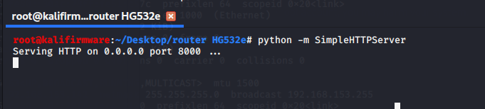

CVE-2017-17215
条评论CVE-2017-17215
做为路由器分析入门的第一篇文章吧。后面看情况慢慢更。希望能从0挖到洞。投了先知了，不知道收不收。
华为HG532路由器漏洞。
固件下载地址：
https://ia801309.us.archive.org/15/items/RouterHG532e/router%20HG532e.rar
解包
用binwalk查看，可以知道里面有个squashfs 文件系统。直接用 –Me 参数解包，我的Binwalk比较老，解不出。所以为用工具firmware-mod-kit下的 squashfs-3.3-lzma解包。
另外：这个Bin是Big endian 大端结构。
得到文件系统：
漏洞信息
根据资料，漏洞出在 /bin/upnp。这里用Ghidra工具去看，用IDA的话不能F5。
反汇编出来的函数众多，当然没必要一个一个看。要直接定位到漏洞位置，首先找到system，右键找到相关调用位置。
这下一个一个的看system的位置，来到FUN_0040749c这个函数。
可以看到一个很典型的snprintf，system的配合。漏洞就出自这里。根据上面这个图，仔细看看，system 执行的参数是 acStack1040。而 acStack1040 从上一句 snprintf得到，其中的参数local_418，local_414。
local_418 是由函数ATP_XML_GetChildNodeByName 取标签“NewDownloadURL”的值；local 是取标签“NewStatusURL”的值。那么，这2个标签是来自什么位置，怎么触发呢？
根据参考Checkpoint的分析，UPnP支持名为“ DeviceUpgrade”的服务类型。该服务被认为是通过向“ / ctrlt / DeviceUpgrade_1”发送请求（称为controlURL）来执行固件升级操作的，并且是通过名为“ NewStatusURL”和“ NewDownloadURL”的两个元素来执行的。这里借用Checkpoint 的图，如下。
这个图说明了标签“NewStatusURL”的值就是存放的busybox命令，所以在标签“NewStatusURL”里面就可以写上其他命令。这里就是个命令注入漏洞。
Qemu 模拟
首先，要先模拟运行，这里使用qemu来做。Qemu的环境安装不做过多说明，直接从配置开始。下面命令中用到的IP，换成自己虚拟机中的即可。1
2
3安装依赖 ：$ apt-get install bridge-utils
创建网桥，名字Virbr0 : $ brctl addbr Virbr0
设置IP : $ ifconfig Virbr0 192.168.153.1/24 up
创建 tap 接口，名字为 tap0，并添加到网桥1
2
3tunctl -t tap0
ifconfig tap0 192.168.153.11/24 up
brctl addif Virbr0 tap0
启动qemu，需要先下载相关的文件： debian_squeeze_mips_standard.qcow2 和vmlinux-2.6.32-5-4kc-malta 。下载地址：https://people.debian.org/~aurel32/qemu/mips/
启动命令：1
qemu-system-mips -M malta -kernel vmlinux-2.6.32-5-4kc-malta -hda debian_squeeze_mips_standard.qcow2 -append "root=/dev/sda1 console=tty0" -netdev tap,id=tapnet,ifname=tap0,script=no -device rtl8139,netdev=tapnet -nographic
启动成功，用户名密码默认都是root
添加一个IP，然后试试ping外面。1
命令: ifconfig eth0 192.168.153.1/24
接着用Python搭建httpserver。

将解包得到的文件系统打包好，在qemu中下载。
解压出来，挂载，启一个shell。
接着，单独开一个终端，通过ssh远程连上qemu，并且chroot 进入shell，然后执行 upnp，mic文件。
命令如下：1
2
3
4ssh root@192.168.153.1
chroot squashfs-root /bin/sh
./bin/upnp
./bin/mic
然后，在到前面开启的qemu中，用ifconfig 看一下ip的配置。会发现多一个网桥br0，且IP被设置为192.168.1.1。eth0的ip被清除了。
这个时候我们的qemu和外面宿主机已经ping不通了。所以把br0和eth0需要改一下。命令如下：1
2# ifconfig eth0 192.168.153.1/24 up
# ifconfig br0 192.168.153.11/24 up
在ping一下外面，能ping通就可以了。
这个时候，我们用ssh远程连上的qemu的终端不要关闭，直接去浏览器里面访问qemu中eth0的ip，就能看到web登陆界面。
登陆的账号和密码是admin，@Hua1234。这个账号和密码是从Binwalk解固件时，得到的一个乱码的文件中（在我的环境下是乱码的），下图。
文件中的内容就是账号和密码。
漏洞利用
根据参考文章中的EXP进行实验。在cmd位置写上一条命令，比如说：mkdir /tmp/f01965，给一个存放IP的文件（取名为IPS），EXP执行时需要这个文件作为参数，它会从文件中读取目标IP。
然后执行EXP，来看看效果。
我多次执行EXP之后，会看到有个报错，图上红框。
mkdir: cannot create directory ‘/tmp/f01965’: File exists
说文件存在。这时候去tmp目下下看看，下图。
文件存在，说明命令执行成功了。
同时，我们可以验证一下发的包。开启wireshark再执行一次EXP。可以抓到请求。如下图。

细看一下里面的内容，如下图。
可以看到标签“NewStatusURL”后跟上的是EXP中mkdir /tmp/f01965命令。而Server给我们返回的200 ok ，执行成功。
最后，为了方便大家操作下面是所有用到的命令，整理如下。
1 | 配置环境： |
思考
根据前面的分析，漏洞的情况大致说的差不多了。难点的部分是如何触发漏洞，因为我想抓到和Checkpoint文章中配图的一样的POST请求包，想知道正常的请求包的具体内容。
根据checkpoint的文章，我们知道有个DeviceUpgrade服务，可以给 / ctrlt / DeviceUpgrade_1 发送请求。
然后开启wireshark，在Web页面上经过一番寻找，没有发现能发送这样的请求功能存在。猜想有可能是模拟环境的问题。
参考
【1】https://xz.aliyun.com/t/1508
【2】https://xz.aliyun.com/t/6116
【3】https://research.checkpoint.com/2017/good-zero-day-skiddie/
【4】https://ia801309.us.archive.org/15/items/RouterHG532e/router%20HG532e.rar
【5】https://people.debian.org/~aurel32/qemu/mips/